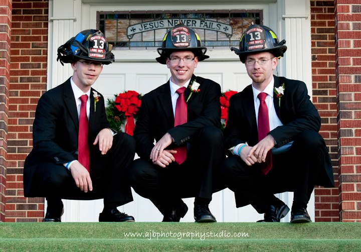

About Me

My name is Adam McCain and this is my portfolio page. I am a volunteer firefighter with Griffith Road volunteer fire department and work at Mineral Springs Fire and Rescue. I started my career as a firefighter in high school in 2008. It was an amazing experience to learn so much knowledge from the old timers. The fire department has taught me a lot and has given me great passion for helping those in need but coding was something that I wanted to do long before firefighting.
I was taught HTML in high school and loved what I could create on the computer. I built websites straight from notepad. It was a great experience that taught me how valuable programs such as Visual Studio Code is for debugging. Sometimes, I could not find what was wrong with my code until I redid it. I love finding solutions to problems in code. It might be tough but I don't mind a challenge. I am very excited about the next couple of months.